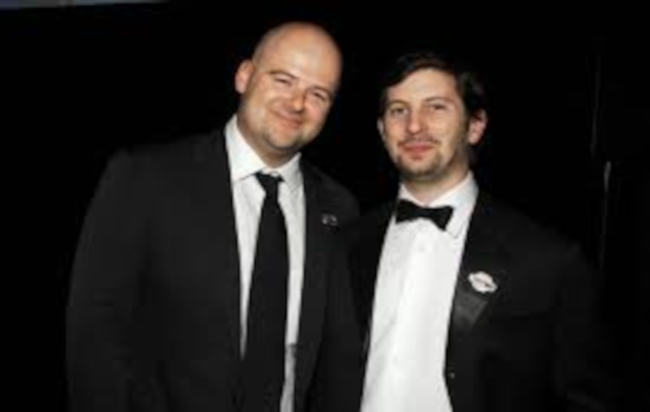
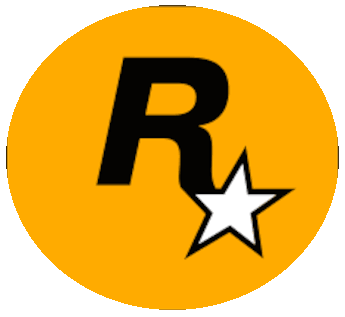

Fundação
A Rockstar Games foi fundada em 1998 como uma subsidiária da Take-Two Interactive, marcando o início de uma jornada que revolucionaria a indústria dos videogames. A empresa surgiu da paixão dos irmãos Sam e Dan Houser, juntamente com Terry Donovan, Jamie King e Gary Foreman, que buscavam criar jogos que fossem mais do que simples entretenimento, mas sim experiências artísticas que provocassem emoções e reflexões.
Take-Two
A Take-Two Interactive é a empresa controladora da Rockstar Games, que é conhecida por desenvolver e publicar a franquia Grand Theft Auto, entre outros títulos de sucesso. A Take-Two, com sede em Nova York, atua no desenvolvimento, publicação e comercialização de entretenimento interativo, sendo a Rockstar Games uma de suas principais subsidiárias.
Seu incrível catálogo
A Rockstar conta com um catálogo recheado com dezenas de jogos, muitos deles sendo Triple-A. Estes jogos, estão incluídos em suas respectivas franquias, que são:
- Grand Theft Auto (GTA)
- Grand Theft Auto
- Grand Theft Auto: London, 1969
- Grand Theft Auto: London, 1961
- Grand Theft Auto 2
- Grand Theft Auto III
- Grand Theft Auto: Vice City
- Grand Theft Auto: Double Pack
- Grand Theft Auto Advance
- Grand Theft Auto: San Andreas
- Grand Theft Auto: The Trilogy
- Grand Theft Auto: Liberty City Stories
- Grand Theft Auto: Vice City Stories
- Grand Theft Auto IV
- Grand Theft Auto IV: The Lost and Damned
- Grand Theft Auto: Chinatown Wars
- Grand Theft Auto: The Ballad of Gay Tony
- Grand Theft Auto V
- Grand Theft Auto Online
- Grand Theft Auto: The Trilogy – The Definitive Edition
- Red Dead Redemption
- Red Dead Revolver
- Red Dead Redemption
- Red Dead Redemption 2
- Bully
- Midnight Club
- Midnight Club: Street Racing
- Midnight Club II
- Midnight Club 3: DUB Edition
- Midnight Club: Los Angeles
- Max Payne
- Max Payne
- Max Payne 2: The Fall of Max Payne
- Max Payne 3
- Manhunt
- Manhunt
- Manhunt 2
Logo
A logo da Rockstar Games, um icônico "Rockstar" com uma estrela estilizada, foi idealizada para refletir a atmosfera anárquica e criativa do estúdio, segundo o site Meio Bit. A Rockstar tinha como objetivo desenvolver jogos inovadores e avançados, e a logo foi pensada para ser um adesivo chamativo, representando essa identidade.
